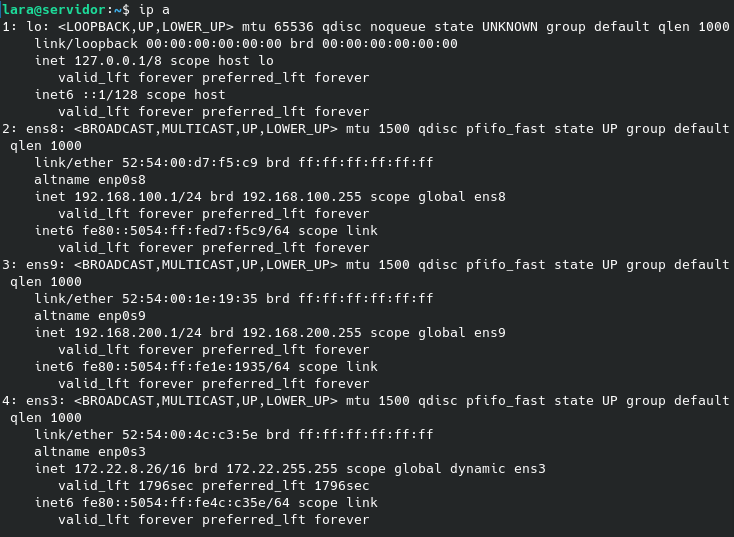
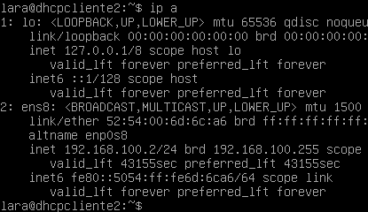
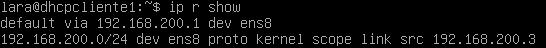
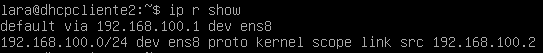
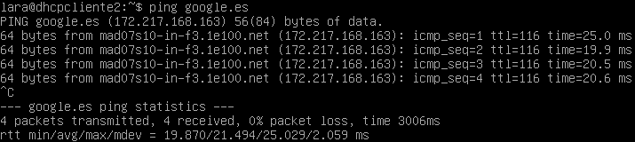
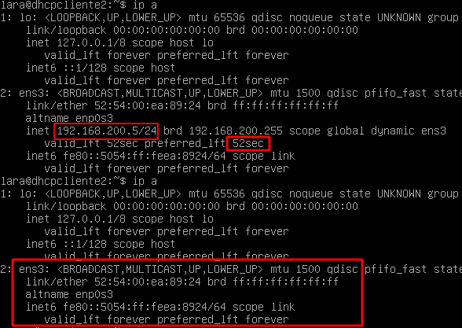
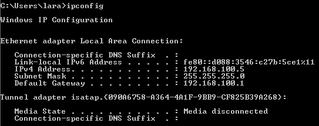
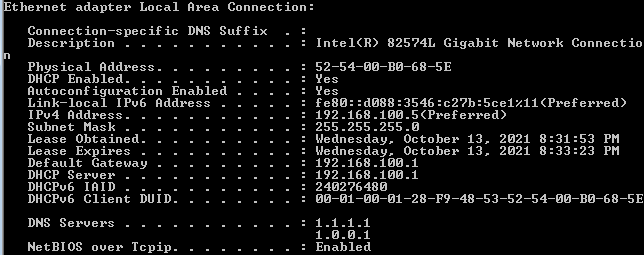
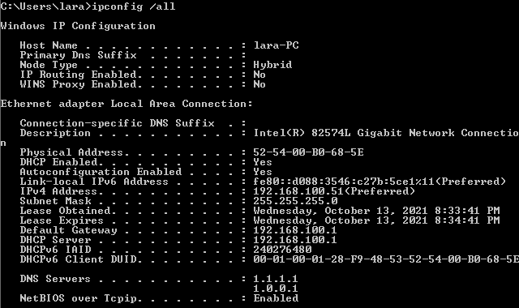

Teniendo cuenta lo que vimos en el artículo Instalación y configuración del servidor DHCP en Linux, crearemos un escenario de tres nodos en libvirt/KVM con las siguientes características:
- Máquina Servidor: tiene tres tarjetas de red, una que le da acceso a internet (NAT o pública) y dos redes privadas (muy aisladas). Al mismo tiempo, hará de router-nat para los clientes de ambas redes.
- Máquina nodo_lan1: un cliente linux conectado a la primera red privada.
- Máquina nodo_lan2: un cliente linux conectado a la segunda red privada.
El servidor DHCP dará servicio a ambos nodos internos, considerando los siguientes aspectos:
- Por la primera red privada se repartirán direcciones IP en la red 192.168.100.0/24, y el tiempo de concesión será de 12 horas.
- Por la segunda red privada se repartirán direcciones IP en la red 192.168.200.0/24, y el tiempo de concesión será de 1 hora.
En ambos casos, los servidores DNS serán 1.1.1.1 y 1.0.0.1.
Una vez que hemos descrito el escenario, ya podemos ponernos en marcha. 
Creación del escenario con libvirt/KVM y configuración del servicio DHCP
En primer lugar, creamos la máquina virtual que hará de servidor DHCP:
virt-install --name dhcp_servidor --disk size=10 --memory 1024 --cdrom ~/Descargas/debian-11.0.0-amd64-netinst.iso
Una vez finalizada la instalación del servidor, apagamos la máquina y la clonamos dos veces para tener los dos clientes:
virt-clone --name dhcp_cliente1 --original dhcp_servidor --auto-clone
virt-clone --name dhcp_cliente2 --original dhcp_servidor --auto-clone
Después, le añadimos dos nuevas interfaces al servidor mediante las redes muy aisladas (que iniciamos previamente con net-start):
virsh -c qemu:///system attach-interface --domain dhcp_servidor --type network --source muyaislada --persistent
virsh -c qemu:///system attach-interface --domain dhcp_servidor --type network --source muyaislada2 --persistent
A continuacion, editamos el fichero /etc/network/interfaces, donde configuraremos las dos nuevas interfaces, añadiéndoles una IP estática:
# The loopback network interface
auto lo
iface lo inet loopback
# The primary network interface
allow-hotplug ens3
iface ens3 inet dhcp
# Primera red muy aislada
allow-hotplug ens8
iface ens8 inet static
address 192.168.100.1
netmask 255.255.255.0
# Segunda red muy aislada
allow-hotplug ens9
iface ens9 inet static
address 192.168.200.1
netmask 255.255.255.0
Al reiniciar el servidor y ejecutar un ip a, ahora se verán las nuevas interfaces configuradas:

Antes de pasar a configurar la red de los clientes, aprovechamos para instalar el paquete isc-dhcp-server en el servidor y editar los ficheros /etc/default/isc-dhcp-server y /etc/dhcp/dhcpd.conf:
- /etc/default/isc-dhcp-server:
INTERFACESv4="ens8 ens9"
- /etc/dhcp/dhcpd.conf:
subnet 192.168.100.0 netmask 255.255.255.0 {
range 192.168.100.2 192.168.100.254;
option subnet-mask 255.255.255.0;
option routers 192.168.100.1;
option domain-name-servers 1.1.1.1,1.0.0.1;
default-lease-time 43200;
max-lease-time 43200;
}
subnet 192.168.200.0 netmask 255.255.255.0 {
range 192.168.200.2 192.168.200.254;
option subnet-mask 255.255.255.0;
option routers 192.168.200.1;
option domain-name-servers 1.1.1.1,1.0.0.1;
default-lease-time 3600;
max-lease-time 3600;
}
Finalmente, reiniciamos el servicio de isc-dhcp-server y pasamos a configurar los clientes, a los que añadiremos la red muy aislada y quitaremos la red NAT.
virsh -c qemu:///system attach-interface --domain dhcp_cliente1 --type network --source muyaislada --persistent
virsh -c qemu:///system attach-interface --domain dhcp_cliente2 --type network --source muyaislada2 --persistent
virsh -c qemu:///system detach-interface --domain dhcp_cliente1 --type network --mac 52:54:00:f2:f7:a9
virsh -c qemu:///system detach-interface --domain dhcp_cliente2 --type network --mac 52:54:00:13:fe:49
En cada uno de los clientes, accedemos al fichero /etc/network/interfaces para cambiar el nombre de las interfaces, que habrán cambiado:
- Cliente 1:
# The loopback network interface
auto lo
iface lo inet loopback
# The primary network interface
allow-hotplug ens8
iface ens8 inet dhcp
- Cliente 2
# The loopback network interface
auto lo
iface lo inet loopback
# The primary network interface
allow-hotplug ens8
iface ens8 inet dhcp
Reiniciamos las máquinas, y al ejecutar ip a, veremos las nuevas direcciones IP servidas por DHCP:

En el fichero /var/lib/dhcp/dhclient.leases del servidor tendremos ambos registros:
lease 192.168.200.3 {
starts 3 2021/10/13 12:18:10;
ends 3 2021/10/13 13:18:10;
cltt 3 2021/10/13 12:18:10;
binding state active;
next binding state free;
rewind binding state free;
hardware ethernet 52:54:00:44:fd:8b;
uid "\377\000D\375\213\000\001\000\001(\371SNRT\0003\250>";
client-hostname "dhcpcliente1";
}
lease 192.168.100.2 {
starts 3 2021/10/13 11:48:17;
ends 3 2021/10/13 23:48:17;
cltt 3 2021/10/13 11:48:17;
binding state active;
next binding state free;
rewind binding state free;
hardware ethernet 52:54:00:6d:6c:a6;
uid "\377\000ml\246\000\001\000\001(\371R\363RT\000ml\246";
client-hostname "dhcpcliente2";
}
Al igual que en los ficheros de concesiones de los clientes:
lease {
interface "ens8";
fixed-address 192.168.200.3;
option subnet-mask 255.255.255.0;
option routers 192.168.200.1;
option dhcp-lease-time 3600;
option dhcp-message-type 5;
option domain-name-servers 1.1.1.1,1.0.0.1;
option dhcp-server-identifier 192.168.200.1;
renew 3 2021/10/13 15:32:46;
rebind 3 2021/10/13 16:01:55;
expire 3 2021/10/13 16:09:25;
}
lease {
interface "ens8";
fixed-address 192.168.100.2;
option subnet-mask 255.255.255.0;
option routers 192.168.100.1;
option dhcp-lease-time 43200;
option dhcp-message-type 5;
option domain-name-servers 1.1.1.1,1.0.0.1;
option dhcp-server-identifier 192.168.100.1;
renew 3 2021/10/13 17:27:12;
rebind 3 2021/10/13 22:18:18;
expire 3 2021/10/13 23:48:18;
}
Configuración del router-NAT
Primero, instalamos el paquete iptables:
sudo apt install -y iptables
Para activar el bit de forwarding podemos ejecutar el siguiente comando:
sudo su
echo "1" > /proc/sys/net/ipv4/ip_forward
Sin embargo, en cuanto reiniciemos la máquina, perderemos el cambio que hemos hecho en ese fichero.
Por lo tanto, como alternativa, entramos en el fichero /etc/sysctl.d/99-sysctl.conf y descomentamos la siguiente línea:
net.ipv4.ip_forward=1
Después, entramos en el fichero /etc/network/interfaces y añadimos el enrutamiento con iptables en las interfaces conectadas con los clientes:
# The primary network interface
allow-hotplug ens3
iface ens3 inet dhcp
# Primera red muy aislada
allow-hotplug ens8
iface ens8 inet static
address 192.168.100.1
netmask 255.255.255.0
post-up iptables -t nat -A POSTROUTING -s 192.168.100.0 -o ens3 -j MASQUERADE
# Segunda red muy aislada
allow-hotplug ens9
iface ens9 inet static
address 192.168.200.1
netmask 255.255.255.0
post-up iptables -t nat -A POSTROUTING -s 192.168.200.0 -o ens3 -j MASQUERADE
Guardamos, salimos del fichero y reiniciamos el servidor. Las rutas por defecto del servidor y los clientes son ahora las siguientes:


 Ya podemos hacer ping desde los clientes a una página web:
Ya podemos hacer ping desde los clientes a una página web:

Pruebas con el servidor DHCP en Windows y Linux
Al detener el servicio de DHCP, los clientes Linux han dejado de recibir direcciones IP cuando se acaba el tiempo de concesión, mientras que al ejecutar un ipconfig en el cliente Windows después de un tiempo, este sigue manteniendo su IP.


En siguiente lugar, volvemos a iniciar el servidor, pero cambiando el rango de direcciones IP de tal modo que ahora se servirán direcciones desde la 192.168.100.50 a la 192.168.100.100. En Linux, cuando acaba el tiempo de concesión, comprobaremos que cambia de IP; en Windows ha hecho exactamente lo mismo:


Todos estos pasos los he plasmado en una receta de ansible. Os animo a que lo probéis en Vagrant ;)